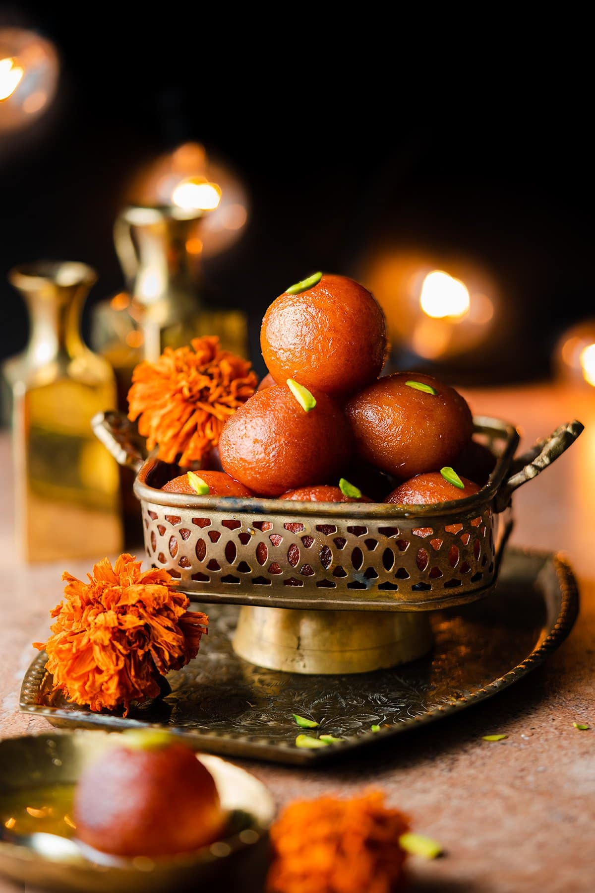
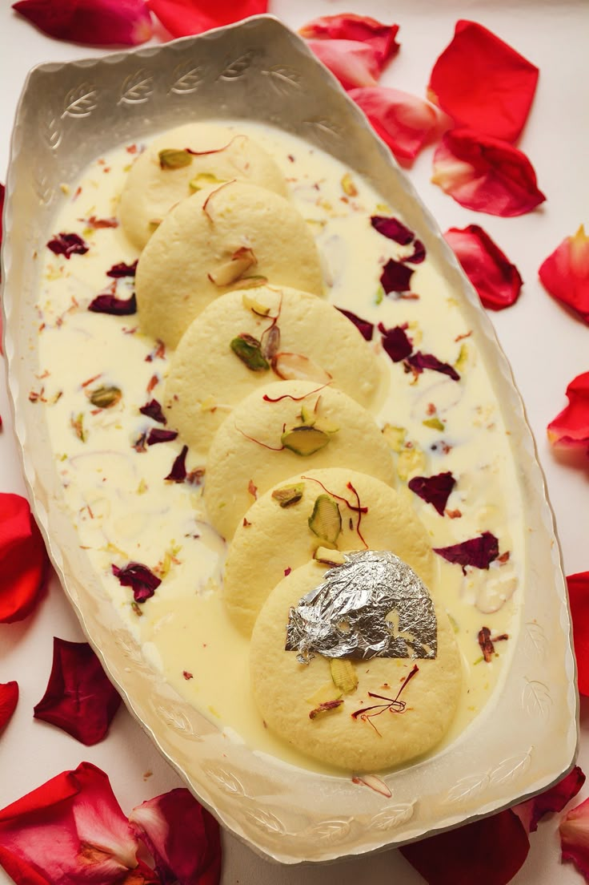
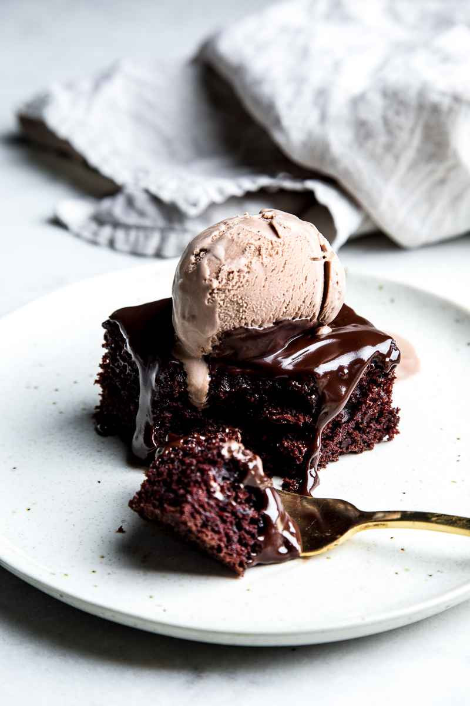

Gulab Jamun
Ingredients
- 1 cup milk powder
- ¼ cup all-purpose flour (maida)
- 2 tbsp ghee (clarified butter)
- ¼ cup milk (warm)
- 1/8 tsp baking soda
- Oil or ghee (for frying)
Recipe
- Make sugar syrup: Combine sugar, water, and cardamom in a pan. Boil until slightly sticky. Add rose water and keep warm.
- Make dough: In a bowl, mix milk powder, flour, baking soda, and ghee. Add warm milk gradually to form a soft dough. Rest for 10 mins.
- Shape balls: Make small smooth balls (avoid cracks).
- Fry: Heat oil on low-medium heat. Fry balls until golden brown.
- Soak: Immediately transfer into warm sugar syrup. Soak for at least 30 mins before serving.

Rasmalai
Ingredients
- 1 Can of Rasmalai or Rasgulla
- 1 12oz can of Evaporated Milk
- 1/2 Cup of Milk
- 1/4-1/2 cup Sugar
- Saffron strands & Ground Cardamom powder
- Chopped Pistachios & Almonds (for garnish)
Recipe
- Take each rasgulla and with a spatula and apply pressure, so the excess sugar syrup is removed from it.
- You can also press and squeeze each rasgulla in your palms. Be gentle and don't apply too much of pressure. As then the rasgullas will break. Repeat with all the rasgulla balls.
- Now place the rasgulla in the simmering milk and simmer for 2 to 3 minutes on a low heat.
- Switch off the heat and then add rose water or kewra water (pandanus water).
- Stir gently. Cover and let the rasmalai come to room temperature. Then chill in a covered container or bowl.
- Serve garnished with blanched, sliced almonds or pistachios that were kept aside and a few saffron strands.
- You can also serve rasmalai warm or at room temperature.

Chocolate Cake
Ingredients
- 1½ cups all-purpose flour
- 1 cup sugar
- ¼ cup cocoa powder
- 1 tsp baking soda
- ½ tsp salt
- 1 cup water
- ⅓ cup vegetable oil
- 1 tbsp vinegar (or lemon juice)
- 1 tsp vanilla extract
Recipe
- Preheat oven to 180°C (350°F). Grease and line a cake tin.
- In a large bowl, sift together flour, cocoa powder, baking soda, and salt.
- Add sugar, water, oil, vinegar, and vanilla. Mix well into a smooth batter.
- Pour into the tin and tap to remove air bubbles.
- Bake for 30-35 mins or until a toothpick comes out clean.
- Cool and serve plain or with frosting of choice.
